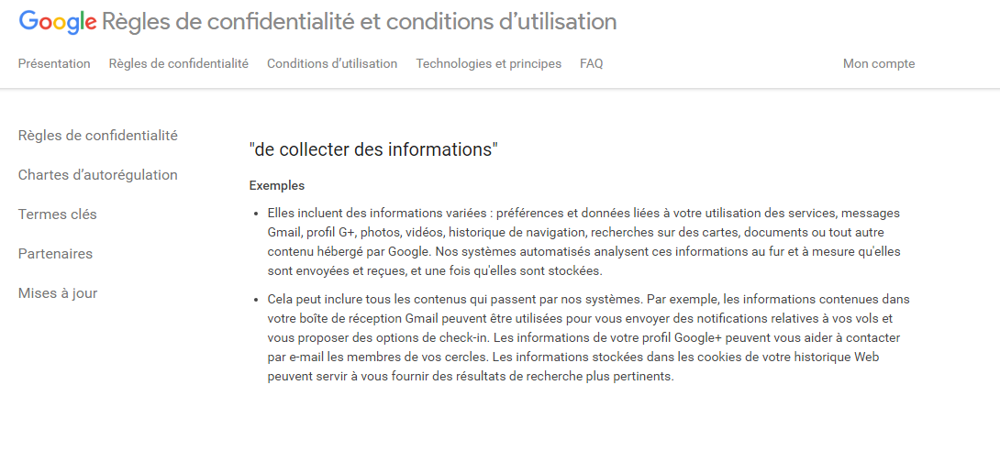

L'Anonymat des Internautes
Est-il possible de se protéger ou de diminuer la collecte de données personnelles ?
Ce que dit la loi :
Voici les diffeérent droit dont dispose un internaute français selon la loi:
"Informatique et liberté", article 32
Se protéger :
Tout d'abord pour se protéger de la collecte de données, il faut régler les paramètres de confidentialité
et gérer les paramètres des cookies.

Puis finalement nettoyer régulièrement le cache de son navigateur et supprimer les cookies avec un logiciel comme CCleaner.
Sources infos:
https://www.legifrance.gouv.fr/affichTexteArticle.do?idArticle=LEGIARTI000024506226&cidTexte=LEGITEXT000006068624
CNIL (Commission Nationale de l'informatique et des libertés)
Sources images:
http://rozaland.ru/img/ex/3049__ccleaner1.png/alt__Y2FjaGUuZmlsZWhpcHBvLmNvbQ